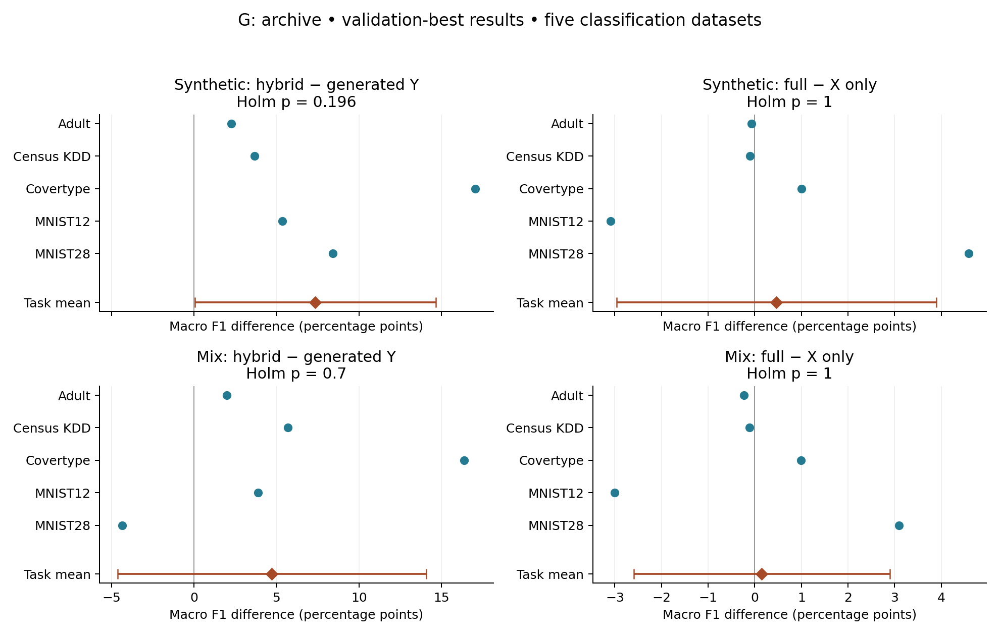

Prepared October 19, 2026, 12:11 AM CDT.
The latest validation-best results are the primary analysis. The two requested comparisons use five classification datasets and macro F1 throughout. Positive differences favor hybrids for the first comparison, and full-table generation for the second. Results below are percentage points; means equally weight datasets, seeds, generators and hybrid labelers.
| mode | question | left_mean | right_mean | difference | ci_low | ci_high | F | df_num | df_den | p | p_holm |
|---|---|---|---|---|---|---|---|---|---|---|---|
| synthetic | hybrid_minus_generated | 73.512 | 66.156 | 7.3557 | 0.051506 | 14.66 | 7.8177 | 1 | 4 | 0.04901 | 0.19604 |
| synthetic | full_minus_xonly | 73.744 | 73.28 | 0.46449 | -2.9631 | 3.8921 | 0.14156 | 1 | 4 | 0.72584 | 1 |
| mix | hybrid_minus_generated | 79.769 | 75.042 | 4.7265 | -4.6284 | 14.081 | 1.9678 | 1 | 4 | 0.23333 | 0.69999 |
| mix | full_minus_xonly | 79.843 | 79.694 | 0.1487 | -2.5964 | 2.8938 | 0.022619 | 1 | 4 | 0.88773 | 1 |
Conclusion: Neither requested comparison is significant at familywise α=0.05 after Holm correction. Hybrids improve mean macro F1 by 7.36 percentage points in synthetic-only training and 4.73 points in mix. The synthetic-only effect is nominally p=0.0490, but its adjusted p=0.196 does not pass the planned family. Full-table minus X-only differences are +0.46 and +0.15 points, with wide intervals covering both directions. These results do not establish equivalence.
CTGAN shows the largest descriptive hybrid benefit: +20.57 points (synthetic) and +10.14 (mix); TVAE gains +4.32 and +3.84, while TabDDPM changes −2.83 and +0.20. No generator-specific comparison passes Holm correction. The pooled gain should therefore not be interpreted as a demonstrated benefit for each generator.
The confidence intervals are unadjusted 95% intervals. Holm correction covers the four primary tests together (two questions × two training modes). A nonsignificant result does not establish equivalence. See the effect plot

for dataset variation.1. CTGAN / TVAE / TabDDPM versus hybrids. For each generator, compare its full-table generated-target baseline with the equally weighted mean of RF, XGB and DNN hybrids across both full and X-only constructions. Generated-target baselines enter once, rather than being duplicated for each labeler. 2. Full features versus X only. Among hybrids, compare a generator fitted on (X,Y), discarding generated Y and relabeling X, with a separate generator fitted only on X and then relabeled. Both constructions have the same downstream predictor inputs. This tests inclusion of Y in generator fitting, not removal of downstream feature columns.
The independent unit is a dataset. Seeds 42/43 are averaged within each configuration before inference because they can share heldout rows. Labelers and generators are averaged with equal weights for primary contrasts. Datasets are Adult, Census KDD, Covertype, MNIST12 and MNIST28. Synthetic-only and mix are analyzed separately; mix concatenates all real training rows and all synthetic rows.
For each question, the primary test is a two-level repeated-measures ANOVA on dataset means: score ~ dataset + condition, with F(1,4). Independently verified as the square of the paired t statistic. This tests the mean effect across these five tasks; the 420 classification runs are not 420 independent datasets. Macro F1 is used for every classification task, including MNIST; original comparison figures may display other metrics. The validation-best checkpoint selection metrics remain those saved in the archive (Adult binary F1, other classification macro F1, regression R²).
These secondary tests retain pairing across datasets. Holm correction covers all 12 tests together. Differences below are raw macro F1 units; multiply by 100 for percentage points.
| mode | generator | question | difference | F | df_num | df_den | p | p_holm |
|---|---|---|---|---|---|---|---|---|
| synthetic | ctgan | hybrid_minus_generated | 0.20572 | 6.7333 | 1 | 4 | 0.060375 | 0.72449 |
| synthetic | ctgan | full_minus_xonly | 0.00072946 | 0.07176 | 1 | 4 | 0.80204 | 1 |
| synthetic | tvae | hybrid_minus_generated | 0.043229 | 3.5454 | 1 | 4 | 0.13283 | 1 |
| synthetic | tvae | full_minus_xonly | 0.0060338 | 1.4935 | 1 | 4 | 0.28876 | 1 |
| synthetic | tabddpm | hybrid_minus_generated | -0.028282 | 0.14191 | 1 | 4 | 0.72552 | 1 |
| synthetic | tabddpm | full_minus_xonly | 0.0071713 | 0.033136 | 1 | 4 | 0.86441 | 1 |
| mix | ctgan | hybrid_minus_generated | 0.10137 | 6.4395 | 1 | 4 | 0.064143 | 0.72449 |
| mix | ctgan | full_minus_xonly | 4.1509e-05 | 0.0020955 | 1 | 4 | 0.96568 | 1 |
| mix | tvae | hybrid_minus_generated | 0.03841 | 1.9791 | 1 | 4 | 0.23223 | 1 |
| mix | tvae | full_minus_xonly | 0.0046408 | 0.58598 | 1 | 4 | 0.48665 | 1 |
| mix | tabddpm | hybrid_minus_generated | 0.0020168 | 0.00088553 | 1 | 4 | 0.97769 | 1 |
| mix | tabddpm | full_minus_xonly | -0.0002214 | 5.8103e-05 | 1 | 4 | 0.99428 | 1 |
For each question, generator (three levels) × condition (two levels) are within-dataset factors. The condition effect tests the average requested contrast; the interaction tests whether that contrast differs by generator. Labelers and seeds are averaged before fitting. Generator effects compare average scores across the two conditions and should not be read as a baseline-only generator ranking.
Greenhouse–Geisser epsilon and adjusted degrees of freedom are computed from the dataset-level covariance of centered generator means (generator effect) or centered condition differences (interaction). The two-level condition has epsilon=1. The p column uses corrected degrees of freedom; Holm then covers all 12 omnibus terms. Statsmodels does not supply sphericity corrections itself, so this correction is explicit. All 12 F values were independently reconstructed from sums of squares.
| mode | question | term | F | GG_epsilon | GG_df_num | GG_df_den | p | p_holm |
|---|---|---|---|---|---|---|---|---|
| synthetic | hybrid_minus_generated | generator | 1.573 | 0.53604 | 1.0721 | 4.2883 | 0.27778 | 1 |
| synthetic | hybrid_minus_generated | condition | 7.8177 | 1 | 1 | 4 | 0.04901 | 0.58812 |
| synthetic | hybrid_minus_generated | generator:condition | 2.7726 | 0.51615 | 1.0323 | 4.1292 | 0.16937 | 1 |
| synthetic | full_minus_xonly | generator | 1.9463 | 0.50238 | 1.0048 | 4.019 | 0.23533 | 1 |
| synthetic | full_minus_xonly | condition | 0.14156 | 1 | 1 | 4 | 0.72584 | 1 |
| synthetic | full_minus_xonly | generator:condition | 0.020985 | 0.51159 | 1.0232 | 4.0928 | 0.89609 | 1 |
| mix | hybrid_minus_generated | generator | 1.5259 | 0.84429 | 1.6886 | 6.7543 | 0.27898 | 1 |
| mix | hybrid_minus_generated | condition | 1.9678 | 1 | 1 | 4 | 0.23333 | 1 |
| mix | hybrid_minus_generated | generator:condition | 1.4319 | 0.63345 | 1.2669 | 5.0676 | 0.29862 | 1 |
| mix | full_minus_xonly | generator | 1.5957 | 0.50112 | 1.0022 | 4.0089 | 0.27512 | 1 |
| mix | full_minus_xonly | condition | 0.022619 | 1 | 1 | 4 | 0.88773 | 1 |
| mix | full_minus_xonly | generator:condition | 0.025436 | 0.52768 | 1.0554 | 4.2215 | 0.89132 | 1 |
News and California Housing remain separate from classification. R² is unscaled, with higher better. The following paired ANOVAs average the same configurations but have only two dataset units, hence F(1,1). They are exploratory and cannot support a stable general claim about regression. No two-factor regression model is fitted with only two datasets.
| mode | question | left_mean | right_mean | difference | F | df_num | df_den | p | p_holm |
|---|---|---|---|---|---|---|---|---|---|
| synthetic | hybrid_minus_generated | 0.39883 | 0.34378 | 0.055048 | 3.4011 | 1 | 1 | 0.31632 | 0.93337 |
| synthetic | full_minus_xonly | 0.39792 | 0.39974 | -0.0018157 | 4.6459 | 1 | 1 | 0.27654 | 0.93337 |
| mix | hybrid_minus_generated | 0.3956 | 0.3476 | 0.047996 | 1.6948 | 1 | 1 | 0.41699 | 0.93337 |
| mix | full_minus_xonly | 0.39483 | 0.39637 | -0.0015428 | 6.786 | 1 | 1 | 0.23334 | 0.93337 |
Saved R², NMAEσ and D² means by dataset and construction are in regression_descriptive.csv. NMAEσ is read from saved scores, lower is better; its test-target normalization metadata was verified without refitting. D² is read only where saved in validation-best results. Metrics are never pooled into a common outcome.
The original-checkpoint analysis gives similar hybrid benefits (+7.48 synthetic, +4.46 mix points), with no adjusted significance. Full-versus-X-only estimates change direction across protocols and task exclusions. None of the four primary contrasts passes Holm correction in any prespecified exclusion cohort. These sensitivity results support reporting a descriptive hybrid gain and inconclusive evidence about full versus X-only generation.
Read-only source archive: G:\SummerResearch_Retained_20261013_2221. The current frozen selection contains 602 validation-best records: 420 classification generated/hybrid evaluations, 168 regression generated/hybrid evaluations, and 14 real-only references. Real-only references are retained in frozen inputs but excluded from these requested contrasts. Credit and bonus NB/PCA-GMM arms are outside this balanced validation-best selection; they are not substituted from older protocols.
The original-checkpoint sensitivity uses the 602 matching original records. All 1,204 small JSON records were hashed. 5986 nonempty validation-best score cells were verified against the archived result JSONs, along with saved checkpoint-tensor checks, test IDs/targets checks, and News normalization. The complete grid was verified before fitting; there is no imputation. The archive and existing reports were not modified. Numerical analysis ran remotely using one CPU thread; no experiments were trained or resumed.
Frozen input hashes and provenance: inputs/manifest.json, record hashes, archive guide. Reproducible analysis: analyze.py. Environment and output hashes: validation.json.
Remote execution namespace: .cache/anova_gdrive_20261019_0009/ under the research repository, with analysis.log. Command: OPENBLAS_NUM_THREADS=1 OMP_NUM_THREADS=1 MKL_NUM_THREADS=1 /home/thuy/miniconda3/envs/env/bin/python analyze.py. This is a short score-analysis job and uses no GPU.
Method references: Statsmodels repeated-measures ANOVA, Holm adjustment, SciPy paired t test.